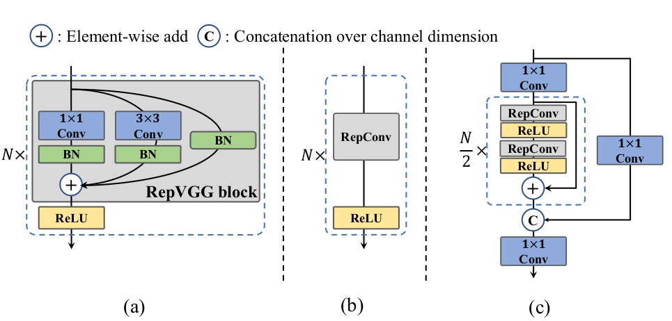
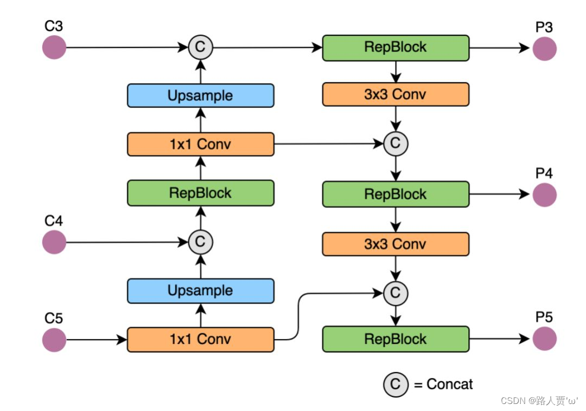
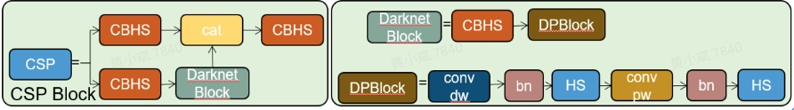
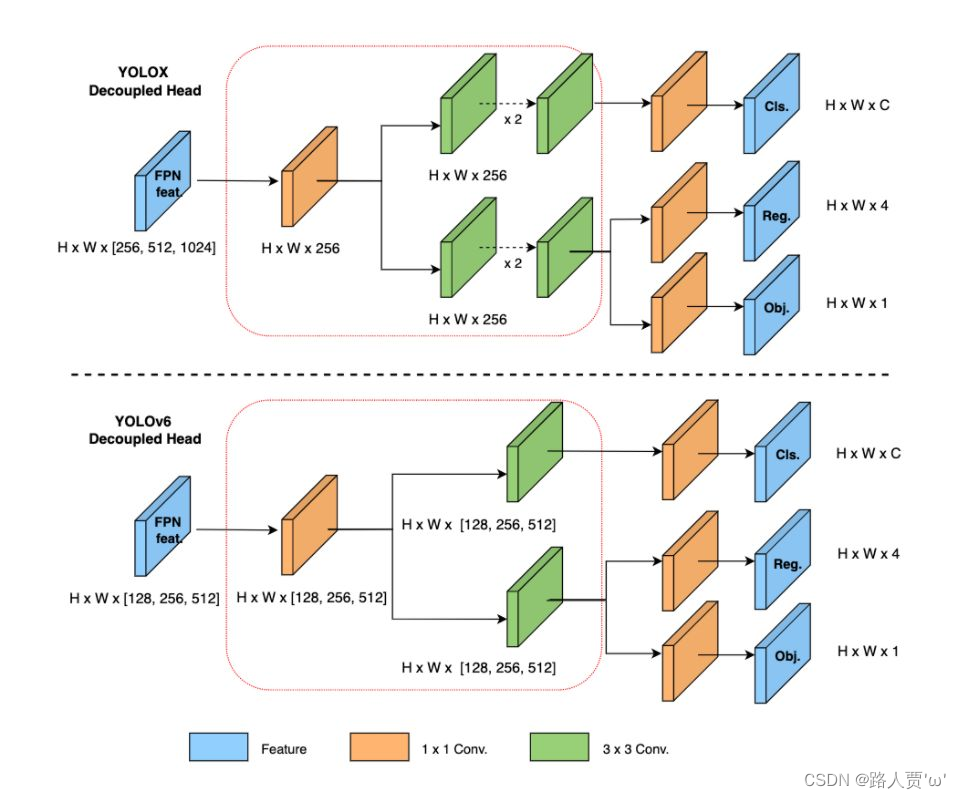

yolov6详解
前言
本文主要关注yolov6的一些重点，v6东西还是很多的！
网络结构
先放MM的框架图

BACKBONE
骨干网络的设计对检测模型的有效性和效率有很大影响。以前的研究表明，多分支网络往往能比单路径网络取得更好的分类性能，但往往伴随着并行性的降低，导致推理延迟的增加。相反，像VGG这样的普通单路径网络具有高并行性和较少内存占用的优势，导致更高的推理效率。最近在RepVGG中，提出了一种结构上的重新参数化方法，将训练时的多分支拓扑结构与推理时的普通结构解耦，以实现更好的速度-准确度权衡。 
V6对于不同尺寸的模型设计了不同的主干网络，EfficientRep. 对于小型模型, 骨干网的主要组成部分是训练阶段的Rep-Block, 如图所示. 在推理阶段，每个RepBlock被转换为具有ReLU激活函数的3×3卷积层（表示为RepConv），如图（b）所示。通常情况下，3×3卷积在主流的GPU和CPU上被高度优化，它享有更高的计算密度。因此，EfficientRep Backbone充分地利用了硬件的计算能力，使推理的延迟大大降低，同时提高了表示能力。
对于小型模型, 骨干网的主要组成部分是训练阶段的Rep-Block, 如图(a)所示. 在推理阶段，每个RepBlock被转换为具有ReLU激活函数的3×3卷积层（表示为RepConv），如图（b）所示。通常情况下，3×3卷积在主流的GPU和CPU上被高度优化，它享有更高的计算密度。因此，EfficientRep Backbone充分地利用了硬件的计算能力，使推理的延迟大大降低，同时提高了表示能力。
然而，我们注意到，随着模型容量的进一步扩大，单路径简单网络的计算成本和参数数量呈指数级增长。为了在计算负担和准确性之间实现更好的权衡，我们修改了一个CSPStackRep块来构建大中型网络的主干。如图（c）所示，CSPStackRep Block由三个1×1的卷积层和一个由两个RepVGG块或RepConv（分别在训练或推理时）组成的堆栈子块与一个剩余连接组成。此外，还采用了跨阶段部分（CSP）连接来提高性能，而没有过多的计算成本。与CSPRepResStage相比，它有一个更简洁的前景，并考虑了准确性和速度之间的平衡。
在小模型(n/t/s) 中，使用RepBlock
在大模型(m/l) 中，使用CSPStackRep Blocks
**实际上大模型(m/l)就是在stage减少了RepBlock的数量，加了3个1*1的卷积做跳变**
总体的主干设计如下：
NECK
整体结构使用的是V5、V4里的PAN。此外，用RepBlock（用于小模型）或CSPStackRep Block（用于大模型）取代YOLOv5中使用的CSPBlock，并相应调整宽度和深度。YOLOv6的颈部被表示为Rep-PAN  Rep-PAN 基于PAN拓扑方式，用RepBlock替换了YOLOv5中使用的CSP-Block(实际就是C3,3个1x1卷积和Bottleneck)，同时对整体Neck中的算子进行了调整，目的是在硬件上达到高效推理的同时，保持较好的多尺度特征融合能力 
HEAD
 YOLOv6采用混合通道策略来建立一个更有效的解耦头。具体来说，我们将中间的3×3卷积层的数量减少到只有一个。头部的宽度由骨干和颈部的宽度乘数共同缩放。这些修改进一步降低了计算成本，以实现更低的推理延迟。
Anchor 机制
yolov6和yolox一样使用了Anchor-free ，Anchor-free检测器因其更好的泛化能力和解码预测结果的简单性而脱颖而出。其后期处理的时间成本大大降低。有两种类型的Anchor-free检测器：基于锚点和基于关键点(参考CornerNet)。在YOLOv6中，我们采用了基于锚点的范式，其回归分支实际上预测了从锚点到box四边的距离。
- Anchor-based检测器需要在训练之前进行聚类分析以确定最佳 Anchor 集合，这会一定程度提高检测器的复杂度 在一些边缘端的应用中，需要在硬件之间搬运大量检测结果的步骤，也会带来额外的延时
Anchor-free方案不需要预设参数，同时后处理耗时短
基于关键点的Anchor free
这里稍微拓展以下，以Cornernet为例，作者的意思就是我们只需要预测物体包围框的左上点坐标（top-left corner）和右下角坐标，那么就可以完成对物体的检测了，那么原来需要设置很多anchor进行 region proposal 的方法变成了一对对关键点的检测了。
cornerNet在进行预测的时候，会为每个点分配一个embedding vector，属于同一物体的点的vector的距离较小。
TODO:写一篇CorenerNet解析
标签分配
SimOTA
OTA 将目标检测中的标签分配视为最佳传输问题。它从全局角度为每个真实对象定义了正/负训练样本。
SimOTA 是 OTA 的简化版本，它减少了额外的超参数并保持了性能。simOTA具体可以参考这里
1 | 1、计算成对预测框与真值框代价，由分类及回归loss构成 |
在YOLOv6的早期版本中，SimOTA被用作标签分配方法。然而，在实践中，我们发现引入SimOTA会减慢训练过程。而且，陷入不稳定的训练也并不罕见。
个人认为在anchor free算法中使用simOTA不稳定的原因在于Dynamic k，假设极端情况下，anchor free算出来的lrbt都接近于0，GT框比较大的时候IoU和取整就是0，那就不分配正样本了
TAL
TAL具体可以参考这里
任务对齐学习 任务对齐学习（TAL）最早是在TOOD中提出的，其中设计了一个统一的分类分数和预测框质量的指标。IoU被这个度量所取代，用于分配对象标签。在一定程度上，任务（分类和箱体回归）不一致的问题得到了缓解。YOLOv6实际使用的时候是使用了ATSS或静态标签分配方法进行warmup，因为训练早期分类和回归是不准的，（是不是对simOTA warmup也可以解决上面的问题）
1 | 步骤 |
LossFunction
分类Loss
VariFocal Loss (VFL) ：提出了非对称的加权操作。
针对正负样本有不平衡的问题和正样本中不等权的问题，来发现更多有价值的正样本。因此选择 VariFocal Loss 作为分类损失。
$$ \[\begin{equation} f(x)=\left \{ \begin{aligned} -q(qlog(p)+(1-q)log(1-p)) ，q>0\\ -\alpha p^{\gamma}log(1-p) , q=0 \end{aligned} \right. \end{equation}\] $$ 其中q是label，正样本的时候q为预测的bbox和GT的IoU,负样本的时候为0
VFL是一个非对称加权，突出正样本中对于IoU大的样本占的比重
Box Regression Loss— 回归框损失
IoU loss
我们用GIoU、CIoU和SIoU进行实验。而SIoU被应用于YOLOv6-N和YOLOv6-T，而其他的则使用GIoU。
IoU详情可以参考这里
GIoU
\[GIoU = IoU-\frac{A_{c}-U}{A_{c}}\]
\(A_{c}\)是外接框的面积，就是最小化IoU的时候也要最小化外接矩形除并集以外的面积
SIoU
\[ SIoU=Distance cost（angle + distance）+Shape cost+IOU loss\]
CIoU
\[ CIoU = IoU-(\frac{\rho^{2}(b,b^{gt})}{c^2}+\alpha v)\\ v = \frac{4}{\pi^{2}}(arctan(\frac{w_gt}{h_gt})-arctan(\frac{w}{h})) \] \(\rho\)是中心点欧式距离，c是外接框面积，v是长宽比的相似性,c在很小的时候会用1替换
SIoU Loss在小模型上提升明显， GIoU Loss在大模型上提升明显，因此选择SIoU (for n/t/s) /GIoU (for m/l) 损失作为回归损失。
Probability Loss—概率损失
Distribution Focal Loss（DFL）将连续分布的box位置简化为离散的概率分布。它考虑了数据的模糊性和不确定性，而没有引入任何其他强的先验因素，这有助于提高box的定位精度，特别是当ground-truth boxes模糊时。在DFL的基础上，DFLv2开发了一个轻量级的子网络，以利用分布统计和实际定位质量之间的密切关联，这进一步提高了检测性能。然而，DFL通常比一般的目标框回归多输出17倍的回归值，导致了大量的开销。额外的计算成本大大阻碍了小模型的训练。而DFLv2由于有了额外的子网络，进一步增加了计算负担。在我们的实验中，在我们的模型上，DFLv2带来的性能增益与DFL相似。因此，我们只在YOLOv6-M/L中采用DFL。
GFL
DFLv2
Object Loss— 目标损失
Object loss 首次提出是在 FCOS 中，用于降低 low-quality bbox 的得分，利于在 NMS 中过滤掉， YOLOX 中使用了该 loss 来加速收敛并提升准确性，但 YOLOv6 中使用同样的方法后并无收益。
工业界改进
更多的训练epoch
将训练从300个epochs延长到400个epochs，以达到更好的收敛性。
YOLOv6-N、T、S在较长时期的训练中，使AP分别提高了0.4%、0.6%和0.5%。
自蒸馏
为了进一步提高模型的准确性，同时不引入太多的额外计算成本，我们应用经典的知识蒸馏技术，使教师和学生的预测之间的KL-散度最小。作者限制教师模型与学生模型网络结构相同，但经过预训练，因此称为自蒸馏。
归因于DFL损失，回归分支也可使用知识蒸馏，损失函数如式1所示： \[ L_{KD} = KL(p_{t}^{cls}||p_{s}^{cls}) + KL(p_{t}^{reg}||p_{s}^{reg}) \]
仅在分类分支上应用自蒸馏可以提高0.4%的AP
在预测框回归任务上执行自蒸馏可以提高0.3%的AP
权重衰减的引入自蒸馏使模型可以提高0.6%的AP
gray border of images
我们注意到，在评价YOLOv5和YOLOv7的实现中的模型性能时，每个图像周围都有一个半截灰色的边框(letter box)。虽然没有增加有用的信息，但它有助于检测图像边缘附近的物体（TODO，why?）。这个技巧也适用于YOLOv6。然而，额外的灰色像素显然会降低推理速度。没有灰色边界，YOLOv6的性能就会下降。我们推测，这个问题与Mosaic增强中的灰边填充有关。为了验证，我们进行了在最后一个epoch中关闭马赛克增强的实验（又称淡化策略）。在这方面，我们改变了灰色边框的面积，并将带有灰色边框的图像直接调整为目标图像的大小。结合这两种策略，我们的模型可以在不降低推理速度的情况下保持甚至提高性能。推理速度。
量化和部署
正常的重参数化不好做量化（有可能是因为参数重组后，参数分布太奇怪了，感觉这种方式对量化很不友好，而且本身由于舍入误差肯定会掉点），实际作者使用了RepOptimizer在每个优化步骤中提出梯度重新参数化。该技术也能很好地解决了基于再参数化的模型的量化问题。因此，我们以这种方式重建了YOLOv6的重新参数化块，并使用重新优化器对其进行训练，以获得对PTQ友好的权值。特征图的分布很窄，这大大有利于量化过程
（1）RepOptimizer 提出了在每次训练的时候进行梯度重参数化，该方法能够较好的解决基于重参数化的模型。
（2）YOLOv6 中就使用了 RepOptimizer 用于获得 PTQ-friendly 的权重，其特征的分布是非常狭窄的，能够有利于量化。
量化相关可以参考基于TensorRT的INT8量化实现原理
后续再写篇针对RepOptimizer的文章填坑，感兴趣的同学可以先参考RepOptimizer学习笔记_re-parameterizing your optimizers rather than arch_麻花地的博客-CSDN博客和RepOptimizer: 其实是RepVGG2
敏感度分析
将量化敏感操作部分转换为浮点计算，进一步提高了 PTQ 性能为了得到敏感性分布，作者使用了 mean-square error (MSE), signal-noise ratio (SNR) 和 cosine similarity 。
为了进行比较，可以选择输出特征映射（在激活某一层之后）来计算有量化和没有量化的这些度量。作为一种替代方法，它也可以通过开关特定层的量化来计算验证AP。
我们在使用重新优化器训练的YOLOv6-S模型上计算所有这些指标，并选择前6个敏感层，以浮动形式运行。
这里应该是说把量化前后（或再部分量化前后）的特征使用MSE这些计算某些算子对量化的敏感度（差异越大表示越敏感），然后重新训练的时候选敏感层前6的层转换为浮点数运算
实验
针对实验部分这里就不放具体提升的细节了，只说说一些比较重要的结论
实验细节
具有动量和学习率余弦衰减的随机梯度下降（SGD）
预热、分组权重衰减策略和指数移动平均（EMA）
Mosaic和Mixup
针对BACKBONE
在比较backbone及neck中不同block及CSPStackRep Block中channel系数影响得出结论：不同网络结构适用不同策略
我们发现，在不同规模的模型的最佳网络结构应该拿出不同的解决方案。对于YOLOv6-N，单路径结构在精度和速度方面优于多分支结构,由于相对较低的存储器占用和较高的并行度，因此运行得更快。对于YOLOv6-S，两种块样式带来相似的性能。当涉及到较大的模型，多分支结构实现更好的性能，在准确性和速度。并且我们最终选择多分支，其中对于YOLOv6-M具有2/3的信道系数，并且对于YOLOv 6-L具有1/2的信道系数。
卷积层和激活函数组合
YOLO系列中常用激活函数有ReLU、LReLU、Swish、SiLU、Mish等， SiLU精度最高且最常用，但是部署与TensorRT 加速 的模型时无法与卷积层融合， ReLU更具有速度优势
（1）Conv+SiLU性能最佳，但RepConv+ReLU达到性能与速度均衡
（2）在YOLOv6-N/T/S/M中使用RepConv/ReLU组合来获得更高的推理速度
（3）在大型模型YOLOv6-L中使用Conv/SiLU组合来加速训练和提高性能。
其余设计
decouple head (DH): 以YOLOv5-N为基线，验证YOLOv6-N中不同部件影响，使用解耦头(DH)性能提升1.4%，耗时增加5%
AF: Anchor-free方案耗时降低51%
EfficientRep Backbone Rep-PAN neck(EB+RN): 主干网络EfficientRep +颈部Rep-PAN 使得性能提升3.6%，耗时降低21%
Hybrid channels(HC): Head中混合通道策略(每个head的3x3Conv通道数不同)，使得性能提升0.2%，耗时降低6.8%
标签分配
TAL比simOTA更好且训练稳定，warmUP的分配策略用的是ATSS（不重要）
LossFunc
cls loss
尝试了Focal Loss、Poly Loss、QFL、VFL最后选了VFL
reg loss
（1）关于IoU系列损失： YOLOv6-N及YOLOv6-T使用SIoU损失，其余使用GIoU损失
（2）关于概率损失： YOLOv6-M/L使用DFL，其余未使用
object loss
没用，YOLOv6-N/S/M中目标损失都降低了效果；
原因：负增益可能来自于TAL中对象分支和其他两个分支之间的冲突，TAL中将IoU与分类联合作为，额外引入一分支导致两分支对齐变为三分支，增加对齐难度
量化结果
当使用RepOptimizer训练模型时，平均性能得到了显著提高，。RepOptimizer通常更快，精度几乎相同
QAT
对于v1.0，我们将伪量化器应用于从第2节获得的非敏感层。执行量化感知训练并将其称为部分QAT。我们将结果与完整QAT对比。部分QAT导致更好的准确性，但吞吐量略有降低。由于v2中的量化敏感层的去除。
2.0版本，我们直接在使用RepOptimizer训练的YOLOv 6-S上使用完整的QAT。我们通过图优化消除插入量化器，以获得更高的精度和更快的速度。我们比较来自PaddleSlim的基于蒸馏的量化结果。我们的YOLOv6-S的量化版本是最快和最准确的
总结
YOLOv6在精度和速度上都超过了其他可用的目标检测器。为了方便工业部署，作者还为YOLOv6提供了定制的量化方法，使其成为开箱 即用的快速检测器。
解决的问题
（1）RepVGG提出的结构重参数化方法表现良好，但在此之前没有检测模型使用。作者认为RepVGG的block缩放不合理，小模型和大模型没必要保持相似网络结构；小模型使用单路径架构，大模型就不适合在单路径上堆参数量。
（2）使用重参数化的方法后，检测器的量化也需要重新考虑，否则因为训练和推理时的结构不同，性能可能会退化。
（3）前期工作很少关注部署。前期工作中，推理是在V100等高配机器完成的，但实际使用时往往用T4等低功耗推理gpu，作者更关注后者的性能。
（4）针对网络结构的变化，重新考虑标签分配和损失函数。
（5）对于部署，可以调整训练策略，在不增加推理成本的情况下提升性能，如使用知识蒸馏。
主要贡献
（1）在不同的工业落地场景下，设计了不同的模型，兼顾精度与速度。其中，小模型为单分支，大模型为多分支。
（2）在分类和回归任务上都使用自蒸馏策略，动态调整教师模型和标签，便于学生模型的训练。
（3）分析了各种标签分配、损失函数和数据增强技术，选择合适的策略进一步提升性能。
（4） 基于RepOptimizer优化器和通道蒸馏，对量化方式做了改进。
未来完善
完善 YOLOv6 全系列模型，持续提升检测性能。
在多种硬件平台上，设计硬件友好的模型。
支持 ARM 平台部署以及量化蒸馏等全链条适配。
横向拓展和引入关联技术，如半监督、自监督学习等等。
探索 YOLOv6 在更多的未知业务场景上的泛化性能。